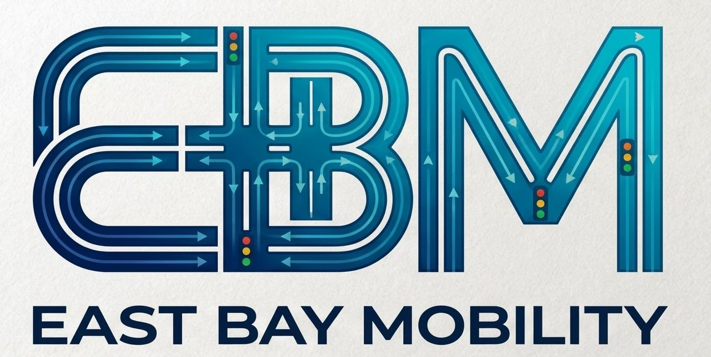

Website Versions
Every version to date, numbered in order. Nothing has been removed.
David's original designs
EBM-01
"Hold the frame."
Sep 28
Black, Apple-style, blue accent. Original from the zip file.
Open →
EBM-01P
PDF preview of EBM-01
The PDF you sent with the zip.
Open →
EBM-02
"Judgment on the street."
Dark with teal, logo at top. Your file "East-Bay-Mobility-v2".
Open →
EBM-03
"Field Book"
Cream paper, navy and teal, red notes. Your file "index.html".
Open →
Claude round 1 (Oct 7)
EBM-04
Executive
Light paper, navy and gold.
Open →
EBM-05
Signal
Dark charcoal with amber.
Open →
EBM-06
Plan Set
Drawing-sheet style, deep green.
Open →
Claude round 2 (Oct 7)
EBM-07
Signal Timing
"Forty years of timing, judgment and standards." Light with red, amber, green.
Open →
EBM-08
Road Signs
"From city hall to the courtroom."
Open →
EBM-09
Case File
"Every intersection has a record. We read it."
Open →
New series (Oct 8)
EBM-10
Timeline · Logo Blue
Traffic-light intro, 1980s to AI timeline, your logo's blue and teal.
Open →
EBM-11
Timeline · Signal
Same new build, signal red/amber/green on light.
Open →
EBM-12
Timeline · Night
Same new build, dark cinematic.
Open →
ArtCraft style (Oct 8)
EBM-13
Cinema · Logo Blue
Word-by-word mission, film-style 1985 to Next timeline, stacking service cards. Logo blue and teal.
Open →
EBM-14
Cinema · Signal
Same build in signal red, amber and green on light.
Open →
EBM-15
Cinema · Night
Same build, dark cinematic.
Open →
Live ArtCraft look (Oct 8)
EBM-16
Orbit · Drafting Sheet
Newest
The chosen base. 3D signal intro, full section bar, firm statement, municipal services, forensic & litigation support, proven work, Rafat, one contact. Updated Oct 8.
Open →